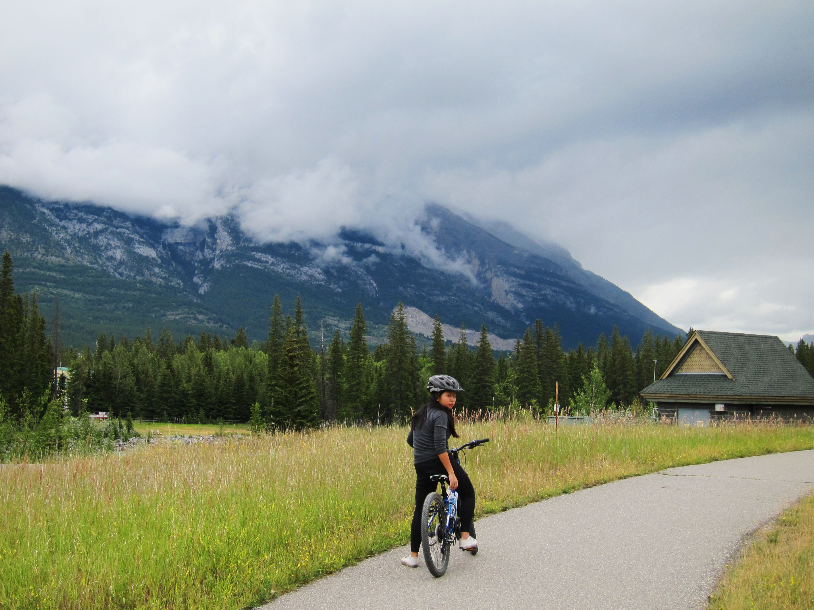
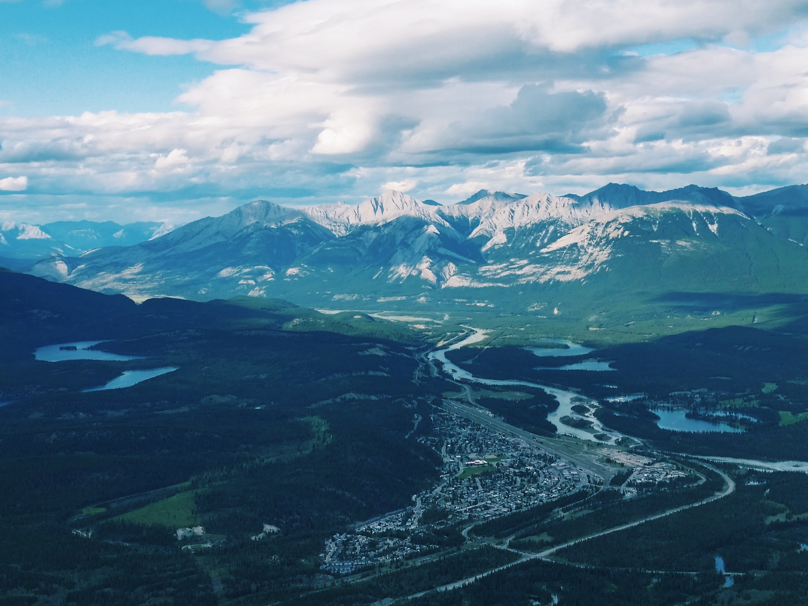

Canoeing on Emerald Lake in Yoho National Park
A biking trail in Canmore, Alberta
The best fries in the entire universe, found at the Wandering Elk in Canmore, Alberta

Biking along a river in Canmore
The view from the top of the Jasper Skytram

A dock on Spirit Island in Jasper National Park

A hiking trail in Maligne Canyon
Video tour of the Canadian Rockies
Music to listen to while you browse